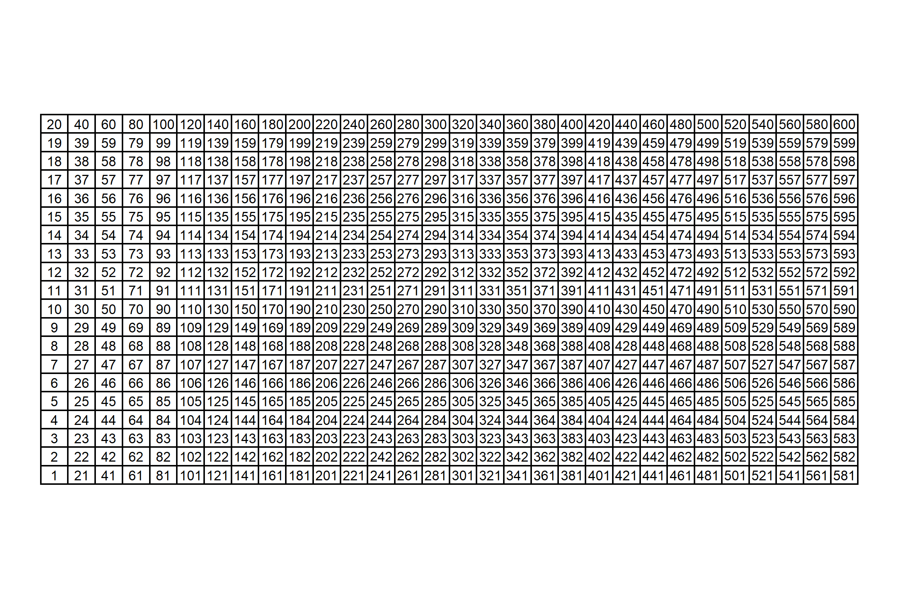

While reading up on modern soccer analytics (Ive had an itch for soccer and tracking data recently, I stumbled upon an excellent set of tutorials written by Devin Pleuler. In particular, his notebook on non-negative matrix factorization (NNMF) caught my eye. I hadnt really heard of the concept before, but it turned out to be much less daunting once I realized that it is just another type of matrix decomposition. Singular value decomposition (SVD), which Im much more familiar with, belongs to the same family of calculations (although NNMF and SVD are quite different). In an effort to really gain a better understanding of NNMF, I set out to emulate his notebook.
In the process of converting his python code to R, I encountered three challenges with resolutions worth documenting.
Before the NNMF calculation, I needed to perform non-equi join with a fairly size-able data set. Unfortunately,
{dplyr}1 does not have built-in support for such a join. I tossed aside any kind of personal implicit bias against{data.table}which is certainly the go-to option in the R ecosystem for non-equi joinsand used it for this process.For the NNMF calculation, the only R implementation (that I could find) comes with the {NMF} package2, which requires the installation of the Bioconductor-exclusive {BiocManager} package. Im relatively unfamiliar with Bioconductor, so this was not very appealing (although I did end up downloading
{NMF}and trying it out). Instead, I ended up using{reticulate}to call theskearn.decomposition.NMF()function directly (as is done in the python code). This is a perfect example of using{reticulate}for a non-trivial reason (i.e.for an algorithm).After the NNMF computation, I needed to perform 2-D Gaussian smoothing, which is helpful for making the output of the NNMF output more interpretable. The
{spatstat}package had just the function for the job (spatstat::blur()), and it all it took for me was to write some a tidy wrapper function to integrate it nicely into my workflow.
Ive always considered myself a whatever gets the job done kind of person, not insistent on ignoring solutions that use base R, {data.table}, python, etc. Nonetheless, replicating Devins notebook really underscored the importance of being comfortable outside of a {tidyverse}-centric workflow.
Anyways, this post outlines the code and my thought process in porting Devins code to R. Ill skip some of the details, emphasizing the things that are most interesting.
Data
Well be working with the open-sourced StatsBomb data for the 2018 Mens World Cup, which Ive called events below. 3
This is a relatively large data set with lots of columns (and rows). However, we only need three columns for what were going to do: (1) a unique identifier for each player, player_id, along with their (2) x and (3) y coordinates.
A quick summary of the data shows that there are 603 unique players, and that the x and y coordinates range from 1 to 120 (yards) and 1 to 80 respectively.
Non-Equi Joining with {data.table}
Our first challenge is to convert the following chunk of python.
import numpy as np
x_scale, y_scale = 30, 20
x_bins = np.linspace(0, 120, x_scale)
y_bins = np.linspace(0, 80, y_scale)
players = {}
for e in events:
if 'player' in e.keys():
player_id = e['player']['id']
if player_id not in players.keys():
players[player_id] = np.zeros((x_scale, y_scale))
try:
x_bin = int(np.digitize(e['location'][0], x_bins[1:], right=True))
y_bin = int(np.digitize(e['location'][1], y_bins[1:], right=True))
players[player_id][x_bin][y_bin] += 1
except:
passThis code creates a nested dict, where the keys are player ids and the values are 20x30 matrices. Each element in the matrix is an integer that represents the count of times that the player was recorded being at a certain position on the pitch. (These counts range from 0 to 94 for this data set.)
Some technical details:
- The python
eventsis actually a pretty heavily nested list4, hence the non-rectangular operations such ase['player']['id']. - Observations with missing coordinates are ignored with the
try-exceptblock. xandyvalues (elements of the'location'sub-list) are mapped to bins usingnumpysdigitize()function, which is analogous tobase::cut().
How can we do this same data manipulation in an idiomatic R fashion? We could certainly create a named list element and use base::cut() to closely match the python approach. However, I prefer to stick with data frames and SQL-ish operations since I think these are much more natural for R users.5
So, going forward with data frames and joins, its quickly apparent that well have to do some non-equi joining. {fuzzyjoin} and {sqldf} offer functionality for such an approach, but {data.table} is really the best option. The only minor inconvenience here is that we have to explicitly coerce our events data frame to a data.table.
Well also need a helper, grid-like data frame to assist with the binning. The 600-row grid_xy_yards data frame (30 x bins * 20 y bins) below is essentially a tidy definition of the cells of the grid upon which we are binning the events data. (One can use whatever flavor of crossing(), expand.grid(), seq(), etc. that you prefer to create a data frame like this.)
Visually, this grid looks like this.

And if you prefer numbers instead of a chart, see the first 10 rows below.
grid_xy_yards
Two things to note about this supplementary data frame:
Cells arent evenly spaced integers, i.e.
xcells are defined at 0, 4.138, 8.276, , 80 instead of something like 0, 4, 8, , 80, andycells are defined at 0, 4.211, 8.421, , 120 instead of something like 0, 4, 8, , 120). Thats simply due to using 30 and 20 instead of 31 and 21 to split up thexandyranges respectively. I point this out because this SQL-ish approach would have been much easier if these numbers were just integers! We could have done an inner join on an integer grid instead of non-equi-joining upon a grid of floating point numbers. Unfortunately, joining on floating point numbers as keys leads to inconsistent results, simply due to the nature of floating points.6The index
idxis important! This will come back into play when we do the NNMF procedure, at which point well flatten out ourx-ypairs into a 1-d format.
Ok, on to the actual data joining.
events_dt <- events %>% drop_na() %>% data.table::as.data.table()
grid_xy_yards_dt <- grid_xy_yards %>% data.table::as.data.table()
# We don't even have to load `{data.table}` for this to work!
events_binned <-
events_dt[grid_xy_yards_dt, on=.(x > x, x <= next_x, y >= y, y < next_y)] %>%
as_tibble() %>%
select(player_id, idx, x, y)
events_binned
In retrospect, this join was pretty straightforward!
The rest of the code below is just doing the actual tallying.
- First, we make an intermediate data set
grid_players, which is the Cartesian product of all possible cells in the grid and all players inevents. - Second, we add back missing cells to
events_binnedusing the intermediate data setgrid_players.
In the end, we end up with a players data frame with 603 player_ids * 30 x bins * 20 y bins = 361,800 rows.
# This `dummy` column approach is an easy way to do a Cartesian join when the two data frames don't share any column names.
grid_players <-
grid_xy_yards %>%
mutate(dummy = 0L) %>%
# Cartesian join of all possible cells in the grid and all players in `events`.
full_join(
events %>%
drop_na() %>%
distinct(player_id) %>%
mutate(dummy = 0L),
by = 'dummy'
)
players <-
events_binned %>%
group_by(player_id, x, y, idx) %>%
summarize(n = n()) %>%
ungroup() %>%
# Rejoin back on the grid to 'add back' cells with empty counts (i.e. `n = 0`).
full_join(grid_players, by = c('player_id', 'x', 'y', 'idx')) %>%
select(-dummy, -next_x, -next_y) %>%
replace_na(list(n = 0L)) %>%
arrange(player_id, x, y)
players
To make this a little bit more tangible, lets plot Messis heatmap. (Is this really a blog post about soccer if it doesnt mention Messi ?)

Non-Negative Matrix Factorization (NNMF) with {reticulate} and sklearn
Next up is the actual NNMF calculation. I dont care if youre the biggest R stan in the worldyou have to admit that the python code to perform the NNMF is quite simple and (dare I say) elegant. The comps=30 here means
from sklearn.decomposition import NMF
# Flatten individual player matrices into shape=(600,) which is the product of the original shape components (30 by 20)
unraveled = [np.matrix.flatten(v) for k, v in players.items()]
comps = 30
model = NMF(n_components=comps, init='random', random_state=0)
W = model.fit_transform(unraveled)My understanding is that comps=30 is telling the algorithm to reduce our original data (with 603 players) to a lower dimensional space with 30 player archetypes that best represent the commonalities among the 603 players.7 Per Devin, the choice of 30 here is somewhat arbitrary. In practice, one might perform some cross validation to identify what number minimizes some loss function, but thats beyond the scope of what were doing here.
After re-formatting our players data into a wide formatequivalent to the numpy.matrix.flatten() call in the python codewe could use the {NMF} package for an R replication.
# Convert from tidy format to wide format (603 rows x 600 columns)
players_mat <-
players %>%
drop_na() %>%
select(player_id, idx, n) %>%
pivot_wider(names_from = idx, values_from = n) %>%
select(-player_id) %>%
as.matrix()
comps <- 30L
W <- NMF::nmf(NMF::rmatrix(players_mat), rank = comps, seed = 0, method = 'Frobenius')
However, I found that the results werent all that comparable to the python results. (Perhaps I needed to define the arguments in a different manner.) So why not use {reticulate} and call the sklearn.decomposition.NMF() function to make sure that we exactly emulate the python decomposition?
sklearn <- reticulate::import('sklearn')
# Won't work if `n_components` aren't explicitly defined as integers!
model <- sklearn$decomposition$NMF(n_components = comps, init = 'random', random_state = 0L)
W <- model$fit_transform(players_mat)
The result includes 30 20x30 matricesone 30x20 x-y matrix for each of the 30 components (comps). We have some wrangling left to do to gain anything meaningful from this NNMF procedure, but we have something to work with!
Gaussian Smoothing with {spatstat}
The last thing to do is to post-process the NNMF results and, of course, make pretty plots. The python plotting is pretty standard matplotlib, with the exception of the Gaussian smoothing performed on each components matrix model.component_ in the loop to make sub-plots.
from scipy.ndimage import gaussian_filter
for i in range(9):
# ... Excerpted
z = np.rot90(gaussian_filter(model.components_[i].reshape(x_scale, y_scale), sigma=1.5), 1)
# ... ExcerptedThe first 9 smoothed component matrices come out looking like this. 8

Theres a couple of steps involved to do the same thing in R.
First, well convert the components matrices to a tidy format,
decomp_tidySecond, well join our tidied components matrices with our tidy grid of cells,
grid_xy_yards, and convert ourxandybins to integers in preparation of the matrix operation performed in the subsequent step.Lastly, well perform the Gaussian smoothing on nested data frames with a custom function,
smoothen_dimension, that wrapsspatstat::blur(). This function also mapsidxback to field positions (in meters instead of yards) using the supplementarygrid_xy_rev_m9 data frame (which is a lot likegrid_xy_yards)
## 1
decomp_tidy <-
model$components_ %>%
as_tibble() %>%
# "Un-tidy" tibble with 30 rows (one for each dimension) and 600 columns (one for every `idx`)
mutate(dimension = row_number()) %>%
# Convert to a tidy tibble with dimensions * x * y rows (30 * 30 * 20 = 18,000)
pivot_longer(-dimension, names_to = 'idx', values_to = 'value') %>%
# The columns from the matrix are named `V1`, `V2`, ... `V600` by default, so convert them to an integer that can be joined on.
mutate(across(idx, ~str_remove(.x, '^V') %>% as.integer()))
## 2
decomp <-
decomp_tidy %>%
# Join on our grid of x-y pairs.
inner_join(
# Using `dense_rank` because we need indexes here (i.e. 1, 2, ..., 30 instead of 0, 4.1, 8.2, ..., 120 for `x`).
grid_xy_yards %>%
select(idx, x, y) %>%
mutate(across(c(x, y), dense_rank))
)
## 3
smoothen_component <- function(.data, ...) {
mat <-
.data %>%
select(x, y, value) %>%
pivot_wider(names_from = x, values_from = value) %>%
select(-y) %>%
as.matrix()
mat_smoothed <-
mat %>%
spatstat::as.im() %>%
# Pass `sigma` in here.
spatstat::blur(...) %>%
# Could use `spatstat::as.data.frame.im()`, but it converts directly to x,y,value triplet of columns, which is not the format I want.
pluck('v')
res <-
mat_smoothed %>%
# Convert 20x30 y-x matrix to tidy format with 20*30 rows.
as_tibble() %>%
mutate(y = row_number()) %>%
pivot_longer(-y, names_to = 'x', values_to = 'value') %>%
# The columns from the matrix are named `V1`, `V2`, ... `V30` by default, so convert them to an integer that can be joined on.
mutate(across(x, ~str_remove(.x, '^V') %>% as.integer())) %>%
arrange(x, y) %>%
# "Re-index" rows with `idx`, ranging from 1 to 600.
mutate(idx = row_number()) %>%
select(-x, -y) %>%
# Convert `x` and `y` indexes (i.e. 1, 2, 3, ..., to meters and flip the y-axis).
inner_join(grid_xy_rev_m) %>%
# Re-scale smoothed values to 0-1 range.
mutate(frac = (value - min(value)) / (max(value) - min(value))) %>%
ungroup()
res
}
decomp_smooth <-
decomp %>%
nest(data = -c(dimension)) %>%
# `sigma` passed into `...` of `smoothen_component()`. (`data` passed as first argument.)
mutate(data = map(data, smoothen_component, sigma = 1.5)) %>%
unnest(data)
decomp_smooth
With the data in the proper format, the plotting is pretty straightforward {ggplot2} code (so its excerpted).

Viola! I would say that our R version of the python plot is very comparable (just by visual inspection). Note that we could achieve a similar visual profile without the smoothingsee belowbut the smoothing undoubtedly makes pattern detection a little less ambiguous.

From the smoothed contours, we can discern several different player profiles (in terms of positioning).
- Components 1, 5, 9: left back
- Components 2: right midfielder
- Component 3: attacking right midfielder
- Component 4: wide left midfielder
- Component 6: central left midfielder
- Components 7, 8: goalkeeper
The redundancy with left back and goalkeeper is not ideal. Thats certainly something we could fine tune with more experimentation with components. Anyways, the point of this post wasnt so much about the insights that could be gained (although thats ultimately what stakeholders would be interested in if this were a real analysis).
Conclusion
Translating python code can be challenging, throwing us off from our typical workflow (for me, being {tidyverse}-centric). But hopefully one can see the value in doing whatever it takes, even if it means using non-tidy R functions (e.g.{data.table}, matrices, etc.) or a different language altogether.
the go-to package for data manipulation and all SQL-ish things
Non-negative matrix factorization may also be abbreviated just as NMF, hence the package name.
Theres nothing too interesting about the data retrievalIve essentially just called
StatsBombR::FreeCompetitions(),StatsBombR::FreeMatches(),StatsBombR::FreeEvents(), andStatsBombR::allclean()in succession forcompetition_id = 43.A potential solution would be to round the floating point numbers before joining and restore them after the join, but thats just kluge-y and inelegant.
I believe the number of components is analogous to the number of components that one would define in performing principal components analysis (PCA).
There is nothing stopping us from plotting all 30 componentsand, in fact, Devin does in his notebookbut I think its easier to digest a fraction of the components (for pedagogical purposes).
StatsBomb data treats the origin as the top-left corner of the pitch, which I find inconvenient for plotting since I prefer the origin to be the bottom left. Thus, this grid also flip the y-axis of the grid, hence the
_revpart of the variable name.